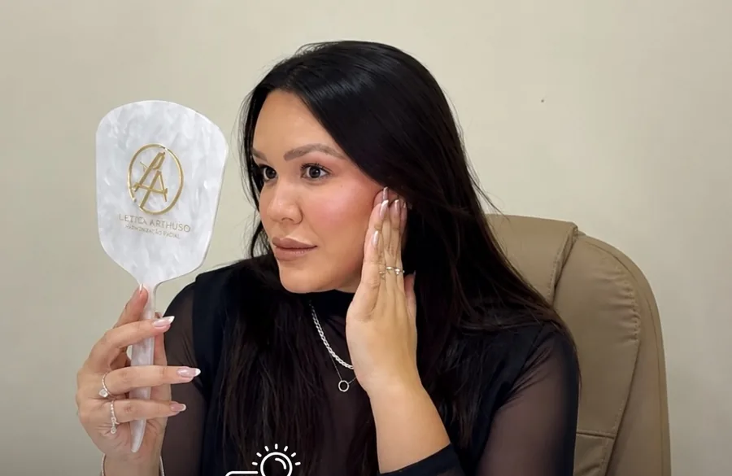

Dra. Letícia Arthuso@leticiaarthuso
Naturalidadesempre será a
minha prioridade.
Harmonização facial · São João del Rei
Dra. Letícia Arthuso@leticiaarthuso
Botox deixa acara parada?Bem planejado, ele suaviza a marca
e mantém a sua expressão.

Mito ou verdade

Dra. Letícia Arthuso@leticiaarthuso
Harmonizaçãosempre foi a minha
paixão, muito antes
da Odontologia.
Minha história
Dra. Letícia Arthuso@leticiaarthuso
Skinboosterou bioestimulador?Na avaliação, a gente vê o que a sua pele pede.

Salve para lembrar

Dra. Letícia Arthuso@leticiaarthuso
Botox temidade certa
para começar?
Arraste para o lado
Dra. Letícia Arthuso@leticiaarthuso
Desde a primeiraconversa, me senti
super à vontade para
falar exatamente
o que eu queria.

Depoimento real · paciente de botox

Dra. Letícia Arthuso@leticiaarthuso
Atendimento comhora marcada,
só para você.
Av. Josué de Queirós, 349São João del Rei
Dra. Letícia Arthuso@leticiaarthuso
Suave, sem perdera expressão.
 Antes
Antes Depois
Depois
Dra. Letícia Arthuso@leticiaarthuso
Vamos descobrirjuntas o que faz
sentido para você?
Agende pelo link da bio